Confidence
What gets through a 0.99 confidence threshold?
No single decision model led on every measure: Fastino GLiDE and Perplexity Decider 27B v1.1 could not be told apart on accuracy (exact McNemar tests on all 528 pairs, Holm correction); Decider v1.1 had the most answers accepted at 0.99 with zero observed errors (349); and Decider v1.1 and Open-Jev changed no answers across five runs of all 2,198 questions.
One possible rule is to accept answers with reported confidence of at least 0.99 and send the rest to be checked. We applied that rule to recorded answers. The chart shows how many answers would be accepted, how many accepted answers were wrong, and how many would be sent to check. It does not establish an error limit for future decisions.
The threshold is an illustrative policy applied to the existing results. It was not validated as a finance automation policy. A future evaluation targeting a maximum error rate must choose the threshold on separate calibration data, freeze it and evaluate it on new test cases under a stated acceptance rule.


Perplexity Decider 27B v1.1 had 349 answers accepted (15.9% of all questions), with 0 wrong (95% error estimate range 0.0–1.1%). Through OpenAI's Decisions API, GPT-6 Luna had 368 answers accepted (16.7% of all questions) and 3 of them were wrong (0.8%); with its stated confidence, 830 were accepted (37.8%) and 137 were wrong (16.5%). The two Luna setups also differ in request format, 1 versus 16 questions per request, so this comparison does not isolate the confidence method.
Show table
| Model and configuration | Answers accepted | Errors among accepted answers | Error estimate range (95%) |
|---|---|---|---|
| Perplexity Decider 27B v1.1Confidence: probability of the chosen option | 34915.9% of all scored questions | 00.0% of accepted | 0.0–1.1% |
| Perplexity Decider 27B v1Confidence: probability of the chosen option | 211.0% of all scored questions | 00.0% of accepted | 0.0–15.5% |
| Fastino GLiDEConfidence: probability of the chosen option | 1215.5% of all scored questions | 00.0% of accepted | 0.0–3.1% |
| Jev 1.13.0Confidence: probability of the chosen option | 31214.2% of all scored questions | 10.3% of accepted | 0.1–1.8% |
| Liquid d1Confidence: probability of the chosen option | 27412.5% of all scored questions | 10.4% of accepted | 0.1–2.0% |
| GPT-6 Luna · Decisions API, betaConfidence: probability of the chosen option | 36816.7% of all scored questions | 30.8% of accepted | 0.3–2.4% |
| GPT-6 Luna · low reasoningConfidence: stated by the model | 83037.8% of all scored questions | 13716.5% of accepted | 14.1–19.2% |
The range shows sampling uncertainty in the error estimate. Fewer answers usually mean a wider range. It is not a guarantee about future errors or results on other tasks. The method section explains how the 95% confidence interval is calculated. A model's confidence is the model's own score for one answer; the range describes uncertainty in the error rate we measured.
- Zero observed errors does not establish an error limit for future decisions. GLiDE's zero errors among 121 accepted answers do not establish a true error rate below 1%: their 95% error estimate range is 0.0–3.1%.
- Counts use the answer key after the audit. The audit targeted earlier runs; later runs did not receive the same process. Sampling intervals do not account for that selection or uncertainty in the answer key.
- This is a selected high confidence subset. It does not measure overall calibration or overall confidence ranking.
- Each count uses the recorded confidence, not a value rounded for display. OpenAI's Decisions API and Jev report probabilities rounded to two decimals, so for them a reported 0.99 or 1.00 passes.
Accuracy
Is it accurate on this kind of task?
The most accurate general-purpose models were far more accurate on these questions: GPT-6 Astra (low reasoning) answered 97.6% correctly, against 67.9% for the most accurate decision model, Fastino GLiDE; decision models cost much less per question than those models and return a probability for every option.
656 reading questions and 1,542 grammar questions. Selected configurations. Performance on one task type does not establish performance on another. These results do not identify the cause of the gap.


Grammar accounts for 70% of the questions, so it contributes more to the overall score. Read the two task scores alongside the total.
Decision model: chooses from the given options and returns a probability for each option. GPT-6 Luna read through OpenAI's Decisions API counts as one, because that API returns a probability for each option. Select a model's name for its access method, setting, questions per request and the date its run started.
Shown: the 8 configurations in the figures on this page, by overall accuracy. “View all configurations” lists all 33.
Tie group: A shared letter means the test did not detect a difference. It does not mean the models are equal.
| Model and setting | Overall | Reading | Grammar | Tie group |
|---|---|---|---|---|
GPT-6 Astra · low reasoning
| 97.6% | 97.0% | 97.9% | ab |
GPT-6 Luna · low reasoning
| 68.3% | 87.3% | 60.2% | g |
Fastino GLiDE
| 67.9% | 87.8% | 59.4% | g |
Perplexity Decider 27B v1.1
| 66.9% | 89.0% | 57.5% | gh |
GPT-6 Luna · Decisions API, beta
| 63.6% | 85.5% | 54.3% | hi |
Perplexity Decider 27B v1
| 60.4% | 86.0% | 49.5% | ij |
Jev 1.13.0
| 57.5% | 83.7% | 46.4% | jk |
Liquid d1
| 57.0% | 82.8% | 46.0% | jk |
View all configurations (33)
| Model and setting | Overall | Reading | Grammar | Tie group |
|---|---|---|---|---|
Gemini 3.8 Flash · high reasoning
| 98.1% | 97.1% | 98.5% | a |
GPT-6 Astra · low reasoning
| 97.6% | 97.0% | 97.9% | ab |
GPT-6.1 Sol · low reasoning
| 96.7% | 96.2% | 96.9% | b |
Gemini 3.8 Flash · low reasoning
| 93.3% | 95.1% | 92.5% | c |
DeepSeek-V4.1-Flash · reasoning on
| 92.0% | 93.4% | 91.4% | cd |
Claude Opus 5.5 · low reasoning
| 90.4% | 94.8% | 88.6% | d |
Claude Sonnet 5.5 · high reasoning
| 85.0% | 85.2% | 85.0% | e |
Gemma 4 31B · reasoning off
| 73.1% | 90.9% | 65.6% | f |
GPT-6 Luna · low reasoning
| 68.3% | 87.3% | 60.2% | g |
Fastino GLiDE
| 67.9% | 87.8% | 59.4% | g |
Perplexity Decider 27B v1.1
| 66.9% | 89.0% | 57.5% | gh |
DeepSeek-V4.1-Flash · reasoning off
| 65.9% | 87.8% | 56.6% | gh |
GPT-6 Luna · Decisions API, beta
| 63.6% | 85.5% | 54.3% | hi |
Claude Sonnet 5.5 · low reasoning
| 61.4% | 82.9% | 52.2% | i |
Perplexity Decider 27B v1
| 60.4% | 86.0% | 49.5% | ij |
Jev 1.13.0
| 57.5% | 83.7% | 46.4% | jk |
Clef
| 57.3% | 85.1% | 45.5% | k |
Liquid d1
| 57.0% | 82.8% | 46.0% | jk |
Cygnet
| 55.7% | 82.8% | 44.2% | k |
Open-Jev 27B v1.1
| 55.7% | 82.9% | 44.1% | k |
Winnow-12B
| 55.5% | 82.0% | 44.2% | kl |
Qwen3.8-27B · vote share, reasoning off
| 54.3% | 84.0% | 41.7% | kl |
Qwen3.8-27B · stated confidence, reasoning off
| 54.2% | 83.4% | 41.8% | kl |
Qwen3.8-27B · yes/no scoring
| 51.9% | 80.5% | 39.8% | l |
Clef-flash
| 45.7% | 73.0% | 34.1% | m |
Qwen3-14B · reasoning off
| 45.7% | 72.1% | 34.5% | m |
Erk-14B · reasoning off
| 45.0% | 72.3% | 33.4% | m |
Metask-Jev 4B
| 40.8% | 62.8% | 31.4% | n |
Strands Decider 2B
| 27.5% | 36.9% | 23.5% | o |
GLiNER2.5-multi-Decide
| 20.2% | 21.0% | 19.8% | p |
Laya
| 19.0% | 20.9% | 18.2% | p |
Laya multilingual
| 17.9% | 17.1% | 18.2% | p |
GLiNER2.5 Multi (base)
| 17.5% | 17.2% | 17.6% | p |
How the tie groups are computed: an exact McNemar test, which compares two configurations on the questions only one of them answered correctly, on each of the 528 pairs of configurations, with the Holm correction, which raises each p-value to allow for the number of pairs tested. Two configurations share a letter exactly when this test does not tell them apart (see Interpreting performance differences).
Stability
Does the answer stay the same when the input is repeated?
Perplexity Decider 27B v1.1 changed no answers across five runs of all 2,198 questions, and gave the same wrong answer in all five runs to all 728 questions it got wrong at least once. Stable is not the same as correct.
We measured answer stability, often called consistency: we repeated the same questions five times and counted how often an answer changed and how often the same wrong answer persisted. Stable answers can make behavior easier to inspect, but answer stability does not establish correctness.
A changed answer is a question on which the five runs did not all choose the same option; it is not the probability of a change on every new request. This measures answer stability, not an independent reproduction of the study. The two groups use different questions and request formats, so compare configurations within a group, not across groups.
Whole bank: 2,198 questions, one question per request, five runs each
| Configuration | Changed answers | Same wrong answer in all five runs |
|---|---|---|
| Open-Jev 27B v1.1 | 00.0% of questions | 974of the 974 questions it got wrong at least once |
| Perplexity Decider 27B v1.1 | 00.0% of questions | 728of the 728 questions it got wrong at least once |
| Perplexity Decider 27B v1 | 20.1% of questions | 869of the 871 questions it got wrong at least once |
| Qwen3.8-27B · yes/no scoring | 1607.3% of questions | 949of the 1,109 questions it got wrong at least once |
| Liquid d1 | 2179.9% of questions | 799of the 1,016 questions it got wrong at least once |
| Jev 1.13.0 | 31414.3% of questions | 721of the 1,035 questions it got wrong at least once |
Fixed sample: 200 questions, 16 questions per request, five runs each
| Configuration | Changed answers | Same wrong answer in all five runs |
|---|---|---|
| Gemma 4 31B · reasoning off | 00.0% of questions | 59of the 59 questions it got wrong at least once |
| GPT-6 Astra · low reasoning | 10.5% of questions | 4of the 5 questions it got wrong at least once |
| DeepSeek-V4.1-Flash · reasoning off | 126.0% of questions | 63of the 75 questions it got wrong at least once |
| DeepSeek-V4.1-Flash · reasoning on | 157.5% of questions | 5of the 20 questions it got wrong at least once |
| Claude Opus 5.5 · low reasoning | 2010.0% of questions | 2of the 22 questions it got wrong at least once |
| Claude Sonnet 5.5 · high reasoning | 3115.5% of questions | 9of the 40 questions it got wrong at least once |
Server state can matter too. Gemma 4 31B gave identical answers in all five runs on the fixed sample, all within one server session. Identical answers within one session did not guarantee identical answers after a restart: when the same requests were sent again after the server restarted, some answers changed. That rerun was not stored, so the published data does not include it (see Answer stability across repeated runs).
Cost
What do you gain, and what do you give up?
Compared with GPT-6 Astra alone (low reasoning), Perplexity Decider 27B v1 followed by GPT-6 Astra (low reasoning) reduced the estimated API cost by 17% and increased total request time from 16.5 to 18.8 minutes. Its accuracy was 0.36 percentage points lower, with a 95% interval from −0.80 to +0.07, so the test did not detect a difference. The table also shows two cheaper models, each run alone on the same questions. For single configurations side by side, including the time per request, see Accuracy, cost and latency below.
The experiment combined stored Perplexity Decider 27B v1 answers with new GPT-6 Astra calls on the same 1,099 held-out questions; in it, one question is one decision. Human review time, human accuracy, production costs and the financial consequences of mistakes were not measured. The monetary figures are API cost estimates. Request time is the total for all 1,099 questions, not the latency of one question.
The first row is the reference for the differences. The cost basis of each setup is in the details below the table.
| Setup | Accuracy | Difference from the first row | Estimated API cost per 1,000 questions | Request time |
|---|---|---|---|---|
| GPT-6 Astra alone (low reasoning)Questions per request: 16 | 97.5% | reference | $5.16 | 16.5 minfor 1,099 questions |
| Perplexity Decider 27B v1 followed by GPT-6 Astra (low reasoning)Questions per request: 1 / 16 | 97.1% | −0.36 points | $4.29 | 18.8 minfor 1,099 questions |
| GPT-6.1 Sol alone (low reasoning)Questions per request: 16 | 96.8% | −0.64 points | $1.20 | 22.7 minfor 1,099 questions |
| Gemini 3.8 Flash alone (low reasoning)Questions per request: 16 | 91.1% | −6.37 points | $0.27 | 5.0 minfor 1,099 questions |
Details: tests, access, cost basis, prices and price dates
Each difference comes with a 95% interval and the p-value of an exact McNemar test, which compares two setups on the questions only one of them answered correctly. p is the probability of a difference at least this large if the two setups were equally accurate. These are the routing test's own comparisons and are not corrected for multiple comparisons (see Statistical methods).
On the 1,099 held-out questions:
- Perplexity Decider 27B v1 followed by GPT-6 Astra (low reasoning) had an estimated API cost 17% lower than GPT-6 Astra alone (low reasoning) ($4.29 against $5.16 per 1,000 questions). Its accuracy was 0.36 percentage points lower (95% interval −0.80 to +0.07 points; exact McNemar test, p = 0.22).
- GPT-6.1 Sol alone (low reasoning) had an estimated API cost 77% lower than GPT-6 Astra alone (low reasoning) ($1.20 against $5.16 per 1,000 questions). Its accuracy was 0.64 percentage points lower (95% interval −1.28 to +0.00 points; exact McNemar test, p = 0.092).
- Gemini 3.8 Flash alone (low reasoning) had an estimated API cost 95% lower than GPT-6 Astra alone (low reasoning) ($0.27 against $5.16 per 1,000 questions). Its accuracy was 6.37 percentage points lower (95% interval −7.94 to −4.80 points; exact McNemar test, p < 0.0001).
Access mode, cost basis and price dates
- GPT-6 Astra alone (low reasoning): access mode Subscription access; cost basis API-equivalent estimate; prices of 8 Oct 2026.
- Perplexity Decider 27B v1 followed by GPT-6 Astra (low reasoning): access mode Hosted API + Subscription access; cost basis List price × reported tokens + API-equivalent estimate; prices of 4 Oct 2026 (Perplexity Decider 27B v1), 8 Oct 2026 (GPT-6 Astra).
- GPT-6.1 Sol alone (low reasoning): access mode Subscription access; cost basis API-equivalent estimate; prices of 8 Oct 2026.
- Gemini 3.8 Flash alone (low reasoning): access mode Hosted API; cost basis List price × reported tokens; prices of 8 Oct 2026.
Batching, concurrency and prices of each run
- GPT-6 Astra: Codex CLI, ChatGPT subscription; 16 questions per request, 1 at a time. Price: $10 input, $1 cached input, $12.50 cache writes, $50 output per 1M tokens (OpenAI's API list price, 8 October 2026).
- Perplexity Decider 27B v1: Perplexity Decisions API; 1 question per request, 1 at a time. Price: $0.04 input, output free per 1M tokens (Perplexity's Decisions API price, 4 October 2026; $0.02 per 1M input tokens since, as listed on 8 October 2026).
- GPT-6.1 Sol: Codex CLI, ChatGPT subscription; 16 questions per request, 1 at a time. Price: $2 input, $0.10 cached input, $2.50 cache writes, $10 output per 1M tokens (OpenAI's API list price, 8 October 2026).
- Gemini 3.8 Flash: Gemini API; 16 questions per request, 1 at a time. Price: $0.75 input, $0.075 cached input, $3.75 output per 1M tokens (Google's Gemini API price, introductory, 8 October 2026; doubles on 1 January 2027, to $1.50 input and $7.50 output per 1M tokens).
Accuracy, cost and latency
| Configuration | Accuracyall 2,198 questions | Estimated API cost per 1,000 decisionsone question is one decision | Latency per requestmedian / 90th percentile | Accepted at 0.99share of questions; wrong among them |
|---|---|---|---|---|
| Perplexity Decider 27B v1.1 | 66.9% | $0.008 | 0.23 s / 0.29 s1 at a time | 349 (15.9%)0 wrong |
| Perplexity Decider 27B v1 | 60.4% | $0.016 | not recorded | 21 (1.0%)0 wrong |
| Jev 1.13.0 | 57.5% | $0.029 | not recorded | 312 (14.2%)1 wrong |
| Liquid d1 | 57.0% | free tier, not priced | not recorded | 274 (12.5%)1 wrong |
| Fastino GLiDE | 67.9% | $0.16 | 2.09 s / 2.28 s4 at a time | 121 (5.5%)0 wrong |
| GPT-6 Luna · Decisions API, beta | 63.6% | $0.040 | 0.19 s / 0.25 s4 at a time | 368 (16.7%)3 wrong |
| Gemini 3.8 Flash · low reasoning | 93.3% | $0.27 | batched (16 per request) | 976 (44.4%)15 wrong |
| GPT-6.1 Sol · low reasoning | 96.7% | $1.13API-price estimate | batched (16 per request) | 1,610 (73.2%)13 wrong |
| GPT-6 Astra · low reasoning | 97.6% | $5.38API-price estimate | not recorded | 1,725 (78.5%)5 wrong |
Latency is the time per request, measured from our machine with one question per request; it includes network time and any retry waits after errors. Runs marked “4 at a time” also include waiting behind our own parallel requests. Hosted and self-hosted runs differ in setup, so latency compares setups, not models. Twelve runs, including GPT-6 Astra, Claude Sonnet 5.5, Jev 1.13.0 and Liquid d1, ran before per-request timing was switched on, so their latency was not recorded. Costs are estimates at API list prices.
- Cost basis: “List price × reported tokens” is what the provider's list price gives for the tokens its API reported; the bill itself was not checked. “API-equivalent estimate” prices a subscription run the same way, although a subscription is not billed per token.
- Subscription usage is not automatically an actual API bill: those rows show what the same tokens would cost at the API's list price. A free tier charge of zero does not establish zero economic cost, and runs on our own GPUs show request time and hardware instead of dollars (see The cost of accuracy and additional reasoning).
What should we test next?
We publish the method, code and recorded answers so others can inspect the results and question the assumptions. A useful next step is to test clearly defined financial tasks with known answers. Suggest a task or point us to a public dataset.
Suggest a task or on X, @zekiworks
The recorded answers and the metric code are published; the copyrighted source questions are not. Recalculating the published metrics from the recorded answers and rerunning the original question bank are different activities: the second needs the book (see Data and code).
Read the full study
What Does a Correct Answer Tell Us About Understanding?
Accuracy, confidence and cost across reading and grammar tasks in a non-English language.
A model can identify the main idea of a passage yet struggle to analyze a sentence in the same language. Does its confidence help us recognize those mistakes? Does giving it more room to reason improve its answers, and at what cost?
We tested 27 models in 33 configurations on 2,198 non-English exam questions covering reading comprehension and grammatical analysis. We measured accuracy, examined whether confidence distinguishes correct answers from mistakes, and compared the resources used by different reasoning settings. We also tested whether a cheaper model can answer selected questions while passing the rest to a stronger one.
Understanding matters when we need a model to use the same relationship across different wordings or apply a familiar rule to a new example. Mitchell and Krakauer (2023) examine different accounts of understanding and their implications for evaluation.1 Chollet (2019) distinguishes acquired skill from the efficiency of acquiring new skills, accounting for prior knowledge and experience.2 Our benchmark compares existing capabilities across reading and grammar tasks in a non-English language. It identifies patterns of success and failure that controlled tests of rewording and new combinations could investigate further.
Main findings
Strong reading performance can coexist with weak grammar performance
Most models perform substantially better on reading than on grammar. Gemma 4 31B, for example, answers about 91% of reading questions correctly and 66% of grammar questions. The strongest configurations perform well on both: GPT-6 Astra reaches about 97% on reading and 98% on grammar.
Additional reasoning substantially improves grammar accuracy
Claude Sonnet 5.5 improves from 52.2% to 85.0% on grammar between low and high effort, at almost twice the cost. Gemini 3.8 Flash improves from 92.5% to 98.5% between low and high thinking, writing 601 output tokens per question instead of 28. DeepSeek-V4.1-Flash scores 91.4% on grammar with reasoning and sampled decoding, against 56.6% with neither, writing 1,006 output tokens per question instead of 6; the comparison does not separate reasoning from sampling. The same model, with a different inference setting, reaches a very different grammar score.
Confidence quality depends on how it is produced
GPT-6 Astra's stated confidence distinguishes correct from incorrect answers well, with an AUROC of about 0.92. Qwen's stated confidence barely beats chance (0.51): it says 0.95 on 98% of its answers. Scoring the same Qwen answers by option probabilities or by agreement across ten samples gives a much more useful ranking (about 0.78). The scores also differ between GPT-6 Luna's two setups: read through OpenAI's Decisions API (beta), which returns a probability for every option, it ranks its answers far better than with the confidence it states through Codex CLI (AUROC 0.82 against 0.69) and is much better calibrated (ECE 0.024 against 0.257), though it answers fewer questions correctly (63.6% against 68.3%). The two setups also differ in request format (1 versus 16 questions per request) and access path, so this comparison does not isolate the confidence method. A confidence value is only as good as the model and method that produce it.
Useful rankings, poor calibration
Some models tend to give correct answers higher confidence than incorrect ones while consistently overstating or understating the probability of being right. Open-Jev is a clear example of underconfidence: all 144 answers assigned a probability between 0.5 and 0.6 are correct. Ranking answers by confidence and interpreting confidence as a probability are separate requirements.
Confidence can reduce cost, with an accuracy tradeoff that needs validation
In the routing test with new GPT-6 Astra calls, Perplexity's Decider v1 handles 17.7% of the questions and cuts estimated API cost by 16.9%. Accuracy is 0.36 points lower than Astra alone, inside the 0.5-point tolerance set before the run; the 95% interval, from −0.80 to +0.07 points, also allows a larger loss. Request time does not fall.
On all 2,198 questions, Sol costs 79% less, with a 0.9-point accuracy loss
On the routing test's held-out questions, routing Astra's questions through Decider v1 saves 17% of the cost. On all 2,198 questions, switching from Astra to GPT-6.1 Sol saves 79%, for 0.9 points of accuracy: 96.7% against 97.6%, a difference that is significant after the Holm correction across the 37 selected comparisons, though not across all 528 pairs behind the tied groups, and larger than the 0.5-point tolerance used for routing. Gemini 3.8 Flash reaches 93.3% at $0.27 per 1,000 questions at low thinking and 98.1% at $2.42 at high thinking, against 97.6% at $5.38 for Astra; Flash's 0.5-point lead at high thinking is not significant, and its price is introductory: it doubles on 1 January 2027. On the routing test's 1,099 held-out questions, Sol alone scores 96.8% at $1.20 per 1,000 questions, against 97.1% at $4.29 for Decider v1 followed by Astra (p = 0.63) and 97.5% at $5.16 for Astra alone (p = 0.09); Gemini 3.8 Flash alone, at low thinking, scores 91.1% at $0.27.
Four decision models share the same Qwen base
Perplexity's Decider v1 and v1.1, Cloudflare's Clef and Open-Jev are all built on Qwen3.8-27B (Decider v1, Decider v1.1, Clef, Open-Jev). TypeSafe and Liquid AI do not say what Jev and d1 are built on. Part of the variety among decision models therefore comes from different adaptations of one shared base. Decider v1, Clef, Open-Jev, Jev, d1 and the two decision models built on Gemma 4 12B (Cygnet and Winnow-12B) score 55.5–60.4%, a few points above plain Qwen3.8-27B (51.9–54.3%), and no gap between neighbours among them is significant after the Holm correction across the 37 selected comparisons. Decider v1.1 keeps v1's backbone and scores 6.5 points higher (66.9% against 60.4%, Holm p < 10⁻¹⁰); Perplexity reports that it lifts the causal mask and adds training data, and this benchmark does not separate the two changes. Two smaller decision models score lower: Cloudflare's Clef-flash, built on Qwen3.5-9B, 45.7%, as many right answers as the plain Qwen3-14B, and Amazon's Strands Decider 2B, built on Qwen3.5-2B, 27.5%. Decider v1 scores about one point lower than Claude Sonnet 5.5 at low effort (60.4% against 61.4%); the test did not detect a difference. Decider v1 costs $0.016 instead of $1.90 per 1,000 questions.
GLiDE and Decider v1.1 have the highest accuracy among the decision models
Fastino's GLiDE scores 67.9% and Perplexity's Decider v1.1 66.9%; the test cannot separate the two (Holm p = 1 across the 37 selected comparisons). Under the correction across all 528 pairs, each of the two differs from every other decision model, except that v1.1 and GPT-6 Luna through the Decisions API (63.6%) cannot be separated. GLiDE scores 7.5 points above Decider v1 (Holm p < 10⁻¹²) and 4.3 points above GPT-6 Luna read through OpenAI's Decisions API (beta). Both leads over Decider v1 come mostly from grammar, 59.4% for GLiDE and 57.5% for v1.1 against 49.5%; on reading the three are close, at 87.8%, 89.0% and 86.0%. GLiDE costs $0.16 per 1,000 questions, about ten times Decider v1 and twenty times v1.1; Perplexity halved its price between the two runs (see How monetary costs are estimated). Of the decision models, GPT-6 Luna through the Decisions API has the lowest calibration error (ECE 0.024), then Decider v1.1 (0.038) and GLiDE (0.045); Decider v1.1 has the highest AUROC (0.84). Fastino describes GLiDE as reasoning on uncertain decisions, and it reports 254 output tokens per question; the other decision models report at most one, except Jev, which reports a charge of about 52. Without a run with that reasoning switched off, GLiDE's accuracy cannot be attributed to it. As a first pass in the routing simulations, Decider v1.1 answers more questions on its own than any other decision model: 21% in front of Astra and 48% in front of Sonnet at high effort, against 20% and 45% for GLiDE. Gemma 4 31B, a general open model, scores 5.2 points above GLiDE (73.1%, Holm p < 10⁻⁴), but its confidence is far less calibrated (ECE 0.24).
Erk-14B is better calibrated; no accuracy difference was detected
Erk-14B is Qwen3-14B with continued training on Turkish by eCloud. On this benchmark the two score 45.0% and 45.7%; the test across all 528 pairs did not detect a difference. Erk-14B's confidence is much better calibrated (ECE 0.135 against 0.410) and ranks its answers slightly better (AUROC 0.75 against 0.73). Continued training by a third party may change more than the language, so the pair does not isolate Turkish training.
Accuracy across models and tasks
Each leaderboard row represents one model configuration and one recorded run. Gemini 3.8 Flash at high thinking has the highest overall accuracy at 98.1%, not significantly different from GPT-6 Astra at 97.6%, followed by GPT-6.1 Sol at 96.7%, Gemini 3.8 Flash at low thinking at 93.3%, DeepSeek-V4.1-Flash with reasoning at 92.0%, Claude Opus 5.5 at low effort at 90.4%, and Claude Sonnet 5.5 at high effort at 85.0%.
Read the overall score alongside the reading and grammar columns. The Exam mix column reweights those two scores to match the Turkish section of the 2026 TYT, the first stage of Turkey's university entrance exam, which had 33 reading questions and seven grammar questions. It illustrates how the question mix changes the ranking; it is not a direct score on that exam.
AUROC measures how well confidence ranks correct answers above incorrect ones. Output tokens are reported per question and include reasoning tokens where reported. Cost is what 1,000 questions cost at the API's list price, in US dollars. Parameter counts come from released checkpoints or provider disclosures; unavailable counts are marked NA. For mixture-of-experts models, the table also reports active parameters where known. Locally run models show “Not estimated”: the cost table gives their request time and hardware instead. d1, which ran on a free tier, shows “Free tier” (see How monetary costs are estimated).
Small gaps need paired comparisons: what decides them is the questions that only one of the two runs answered correctly (see Interpreting performance differences).
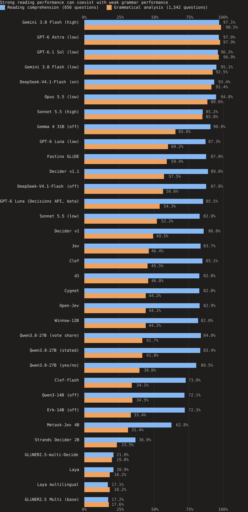
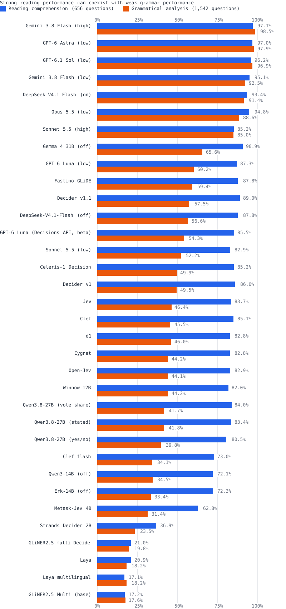
What this benchmark tests
The benchmark examines four connected questions: how accurately models answer reading questions, how accurately they analyze grammatical structure, whether confidence helps identify errors, and what resources are needed to achieve a given level of accuracy. Understanding guides the interpretation of these measurements; it is not a separate score calculated from them.
Reading and grammar scores show how capabilities vary across task categories. Confidence ranking shows whether a model’s more confident answers are more often correct. Calibration asks whether its numerical confidence matches observed accuracy. Reasoning and routing comparisons show what changes when we alter how answers are produced and selected.
TurkishMMLU3 evaluates accuracy on more than 10,000 Turkish questions across nine high-school subjects, and holistic evaluations such as HELM report calibration and efficiency next to accuracy4. Here, reading and grammar are reported separately, alongside confidence ranking, calibration and the cost of routing questions between models. This benchmark evaluates these decision models independently of their makers.
Reading comprehension includes questions about words, sentences and passages. Grammatical analysis includes word formation, suffixes, sentence structure and the categories used in Turkish school grammar. Comparing these tasks lets us examine whether strong performance in one area is accompanied by strong performance in another.
One hypothesis motivating the study is that performance and confidence become less reliable on tasks that are less well represented in training. Training exposure is unknown for most models, so this benchmark cannot isolate it as the cause of a performance gap. One pair comes closer: Erk-14B, Qwen3-14B with continued Turkish training, shows no detected accuracy difference from Qwen3-14B, although that training may change more than the language.
The questions come from a practice book for the Turkish section of the TYT. The bank contains 656 reading questions and 1,542 grammar questions across 20 units. Grammar accounts for 70% of the total, so we report reading and grammar separately as well as together.
Using confidence to decide when to answer
A routing system first asks a cheaper model to answer. If its confidence reaches a chosen threshold, the system accepts that answer. Otherwise, it sends the question to a stronger model. Cascades of this kind, such as FrugalGPT5 and RouteLLM6, have been proposed to cut the cost of large models. The threshold determines how many questions the cheaper model handles and how many of its mistakes enter the final result.
This approach pays off most when the first model is much cheaper than the model receiving the remaining questions. Of the decision models with an API price, Perplexity's Decider v1 and v1.1, Jev and GPT-6 Luna through the Decisions API cost 1.1% or less as much per question as Astra, Opus or Sonnet at high effort, and GLiDE, which Fastino describes as reasoning, 3.0–4.4%. d1 ran on a free tier, and the self-hosted decision models have no dollar figure; the cost table gives their request time. The main alternative is a cheaper frontier model: GPT-6.1 Sol costs $1.13 and Gemini 3.8 Flash $0.27 per 1,000 questions, against $5.38 for Astra, at October 2026 prices.
Routing with new frontier model calls
We split the questions into two halves, keeping questions that share a passage together. A confidence threshold is selected on the first half and fixed before evaluation on the second. The decision model's answers come from its stored run. The remaining questions are sent in new batches to the frontier model, which also answers the entire evaluation half in a separate comparison run.
For Decider v1 followed by GPT-6 Astra, the evaluation half contains 1,099 questions. Decider v1 handles 194 of them. Pipeline accuracy is 97.09%, compared with 97.45% for Astra alone. Estimated API cost falls from $5.16 to $4.29 per 1,000 questions, a saving of 16.9%. Request time rises from about 17 to 19 minutes. On the same 1,099 questions, GPT-6.1 Sol alone scores 96.82% at an estimated $1.20 per 1,000 questions, and Gemini 3.8 Flash alone 91.08% at $0.27.
For Decider v1 followed by Claude Sonnet 5.5 at high effort, Decider v1 handles 343 of 1,099 questions. Pipeline accuracy is 84.80%, compared with 84.90% for Sonnet alone. Estimated cost falls by 21.9%, from $3.76 to $2.93 per 1,000 questions, while request time rises slightly. The accuracy difference has a wide 95% interval, from a loss of 1.95 percentage points to a gain of 1.77.
Both observed losses are below the 0.5-point tolerance, and both intervals include larger losses. Both tests use Decider v1. The decision model's answers come from its stored run; only the frontier calls are new.
Routing simulations with stored answers
Stored answers let us compare many combinations of first models, frontier models and confidence thresholds. The first models are the decision models and Gemma 4 31B, which is not a decision model but gives option probabilities and is more accurate than all of them. Selecting and evaluating a threshold on the same questions gives an optimistic estimate. We therefore also select thresholds on one half of the questions and evaluate them on the other, repeating this process over 300 random splits.
The table reports the share of questions handled by the first model, the change in accuracy and the proportion of splits in which routing performs worse than the frontier model alone. Its cost estimate adds the first model's API cost to the frontier model's for the held-out share passed on, as if every question cost the frontier model the same; self-hosted first models add only GPU time. For Jev followed by Astra, the evaluation halves average 15.3% coverage and an accuracy loss of 0.11 percentage points. Routing is worse than Astra alone in 68% of those splits: a small average loss, but a loss in most splits. Gemma 4 31B handles 14.9% of the evaluation halves in front of Astra and 60.9% in front of Sonnet at high effort, with average losses of 0.09 and 0.12 points. Of the decision models, Decider v1.1 handles the most, 20.9% and 48.3%, then GLiDE, 20.1% and 44.6%.
These simulations reuse both models' stored answers. They screen thresholds and model pairs; the runs with new frontier calls above test them.
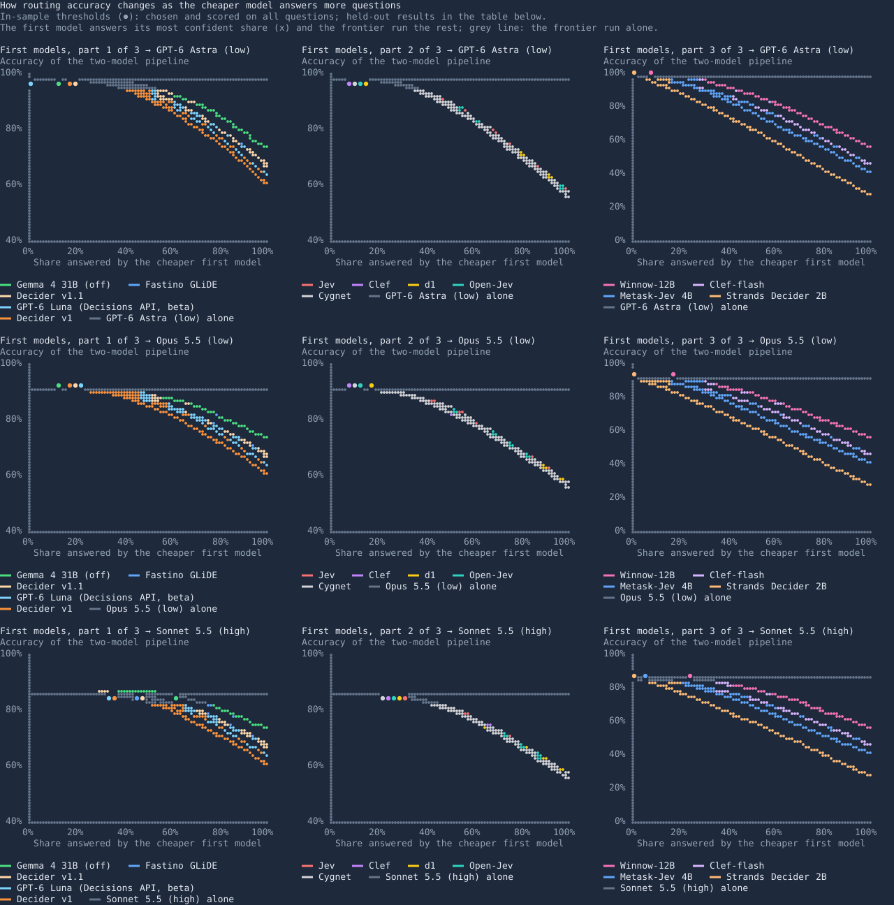

Predicting mistakes in stronger models
We also test whether a decision model's uncertainty identifies questions that stronger models answer incorrectly. Here uncertainty is measured by entropy: it is low when probability is concentrated on one option and high when probability is spread across the options.
The analysis compares this uncertainty with the number of errors made by Astra, Opus and Sonnet. We report rank correlations, permutation tests within each unit, and the share of frontier errors found in the most uncertain tenth of questions. Decision model uncertainty is a weak predictor of frontier errors. Its AUROC for them is 0.59–0.70, and the most uncertain tenth of questions holds 12–18% of the questions on which a frontier model makes a mistake; a random tenth would hold 10%.
The cost of accuracy and additional reasoning
Accuracy needs to be considered alongside the resources used to obtain it. We report output tokens, request time and monetary cost separately because they describe different aspects of a run. Token counts from different models are not a direct measure of equivalent computation.
What additional reasoning changes
Increasing Sonnet 5.5 from low to high effort raises overall accuracy from 61.4% to 85.0% and grammar accuracy from 52.2% to 85.0%. Output grows from about 22 to 199 tokens per question. Estimated API cost rises from $1.90 to $3.65 per 1,000 questions, and request time increases from about 9.6 to 58 minutes.
DeepSeek-V4.1-Flash with reasoning and sampled decoding scores 92.0% overall and 91.4% on grammar, against 65.9% and 56.6% with neither; the comparison does not separate the two changes. Output grows from about 6 to 1,006 tokens per question. The reasoning run takes about 114 minutes with 8 concurrent requests, compared with about 12 minutes for the run without reasoning. Other work also finds that more computation at inference time can raise accuracy, on some problems more than a larger model would7.
Raising Gemini 3.8 Flash from low to high thinking raises overall accuracy from 93.3% to 98.1% and grammar accuracy from 92.5% to 98.5%. Output grows from about 28 to 601 tokens per question, estimated cost from $0.27 to $2.42 per 1,000 questions, and request time from about 5.5 to 43 minutes, with 4 requests in flight.
The relationship between output length and accuracy also differs across models. At the settings tested, Astra reaches 97.6% accuracy with about 21 output tokens per question, Sol reaches 96.7% with 25, and Gemini 3.8 Flash reaches 93.3% with 28 at low thinking, where it reports no thinking tokens.
| Model | Reasoning | Score | Grammar | Output tokens per question | Estimated API cost per 1,000 questions | Request time |
|---|---|---|---|---|---|---|
| Claude Sonnet 5.5 | low | 61.4% | 52.2% | 22 | $1.90 | 9.6 min |
| Claude Sonnet 5.5 | high | 85.0% | 85.0% | 199 | $3.65 | 58 min |
| DeepSeek-V4.1-Flash | off | 65.9% | 56.6% | 6 | Not estimated | 12 min |
| DeepSeek-V4.1-Flash | on | 92.0% | 91.4% | 1,006 | Not estimated | 114 min, 8 requests at a time |
| Gemini 3.8 Flash | low | 93.3% | 92.5% | 28 | $0.27 | 5.5 min |
| Gemini 3.8 Flash | high | 98.1% | 98.5% | 601 | $2.42 | 43 min, 4 requests at a time |
How monetary costs are estimated
Costs are what a run's tokens cost at the API's list price, in US dollars per 1,000 questions asked, including the 12 questions the key audit later excluded. For the runs through Jev, Perplexity, Fastino, Gemini and OpenAI's Decisions API, that is the list price applied to the tokens each API reported; the bills themselves were not checked. The GPT and Claude runs used flat subscriptions, so their figures are what the same tokens would cost on the API. Cache reads and writes are priced at each provider's own rates: Codex reports cached input and cache writes for the GPT runs, and Claude Code writes its prompts to Anthropic's one-hour cache, at twice the input price, while reads cost 0.05 times the input price on Opus 5.5 and Sonnet 5.5. The Gemini runs reported no cached tokens.
Prices are those listed on 8 October 2026, with two dated exceptions, both Perplexity's: it charged $0.04 per 1M input tokens for Decider v1 on 4 October 2026, the day of its run, and $0.02 since, and Decider v1.1 uses the $0.02 listed on 9 October 2026, the day of its runs. Gemini 3.8 Flash's price is introductory and changes on 1 January 2027, when it doubles.
The self-hosted runs have no dollar cost (“Not estimated”); the cost table gives their request time per 1,000 questions and their hardware instead. These times are upper bounds for this setup: all but one self-hosted run sent one request at a time, leaving the GPU idle between requests, and the times include HTTP and server overhead, which weighs most for the smallest models. On owned GPUs, the extra cost of a run is mostly electricity. d1 ran on Liquid AI's free tier, which has no published price (“Free tier”); the routing estimates count it as zero for that reason only.
Performance across the 20 topics
The unit table shows the proportion of questions answered correctly in each topic. Units 1 to 6 cover reading comprehension; units 7 to 20 cover grammar. English names are used so that the task remains clear to readers unfamiliar with the examination; the results file keeps each unit's printed Turkish title.
Topic scores show where an overall average hides uneven performance. They also help distinguish a broad reading and grammar gap from difficulty with a particular grammatical category. Random guessing among the five options has an expected accuracy of 20%; always choosing E, the most common answer in the key, achieves 22.7% on this bank. Models can also prefer particular option letters regardless of content8. Topic scores are also a starting point for behavioral tests of specific capabilities, as in CheckList9: keep a grammatical relationship under a change of wording, or change the relationship and require the answer to change.
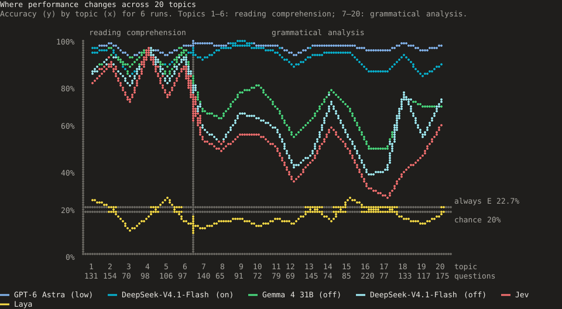
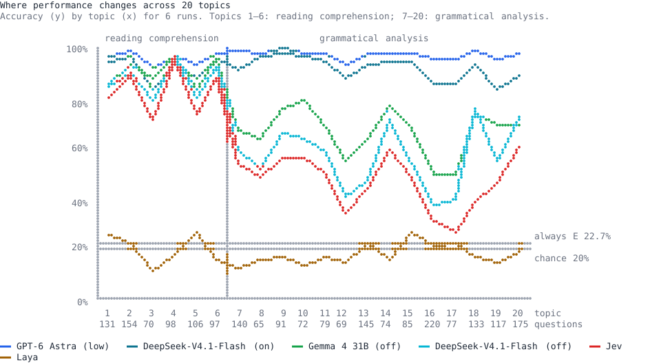
When confidence helps identify mistakes
A useful confidence score should help distinguish answers that are more likely to be correct from those that are less likely to be correct. We evaluate this for all 33 configurations, while keeping track of how each score is produced.
Ranking correct and incorrect answers
AUROC measures how often a randomly selected correct answer has higher confidence than a randomly selected incorrect answer, with tied scores receiving half credit. A value of 0.5 corresponds to chance ranking; 1.0 means every correct answer ranks above every incorrect answer.
This measure answers a practical question: can confidence help us select a more reliable subset of answers? This is selective prediction: answering only the most confident questions and abstaining on the rest10. Routing adds a second model for the questions sent to check, so accuracy among accepted answers (this chart) and accuracy of the complete two-model pipeline (the routing charts) are different quantities. The top 20%, 50% and 80% columns show accuracy when accepting those proportions of answers, ordered by confidence. When a cutoff falls inside a tie in confidence, the table and the chart below average over the tied answers.
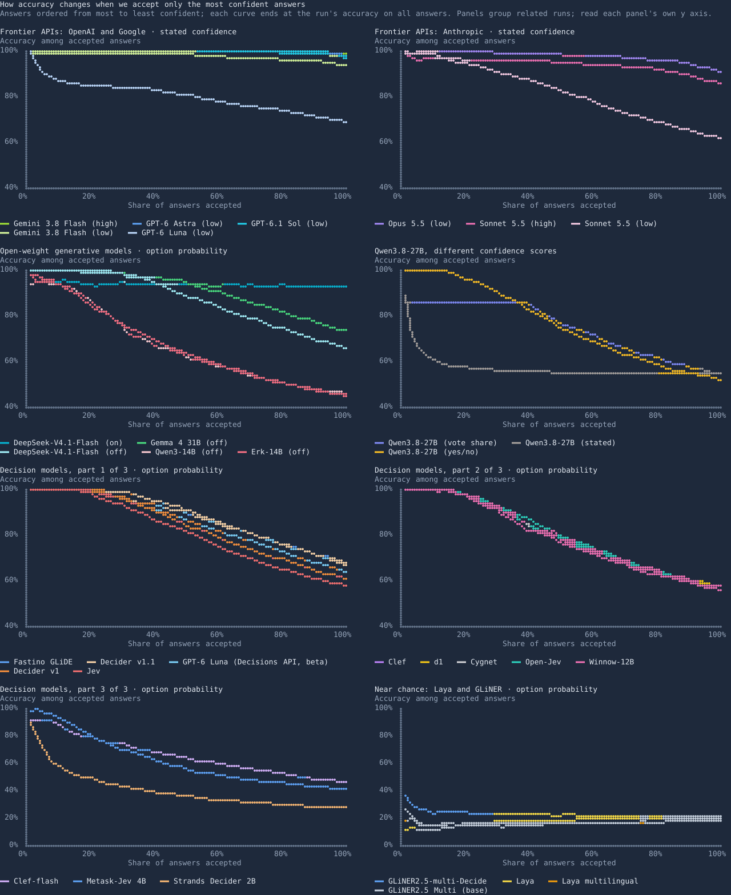
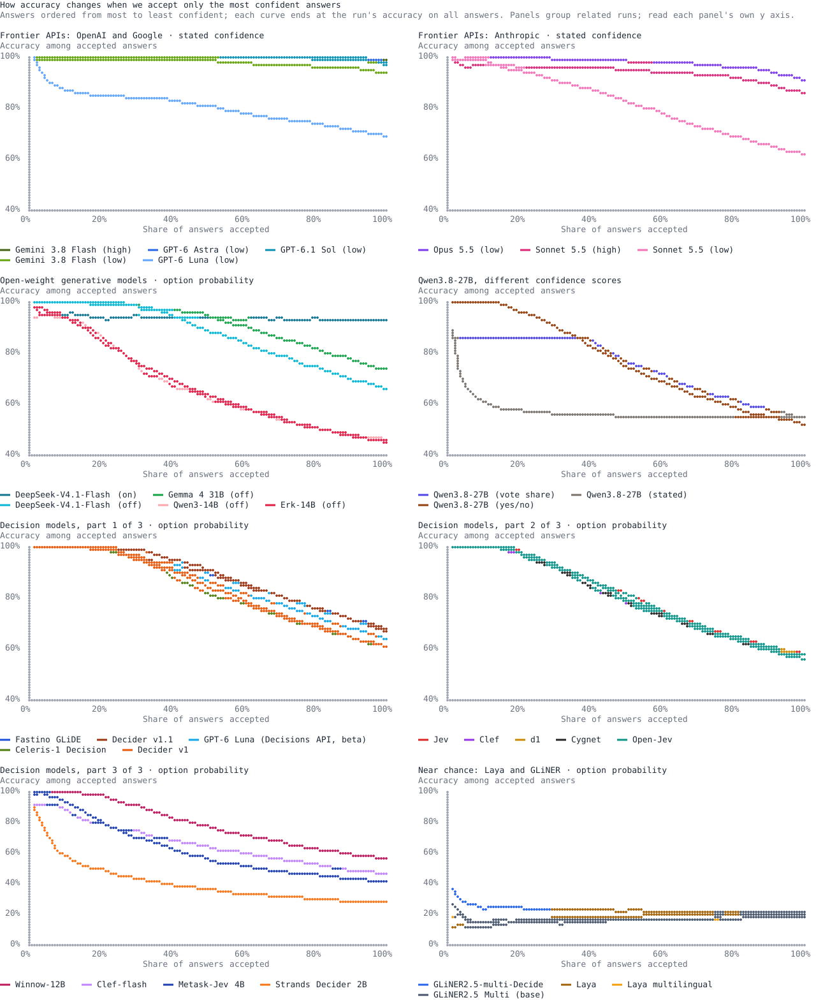
Interpreting confidence as a probability
Calibration asks whether the numerical confidence matches observed accuracy. Among answers assigned a probability close to 0.8, approximately 80% should be correct if those probabilities are well calibrated.
We report expected calibration error11, or ECE, using 10 equal-width confidence bins. It is the average absolute gap between confidence and accuracy across those bins, weighted by the number of answers in each. Lower is better. Zero means confidence and accuracy match within the bins used here.
The confidence range table shows the number of answers next to each accuracy, because a range with few answers says little.
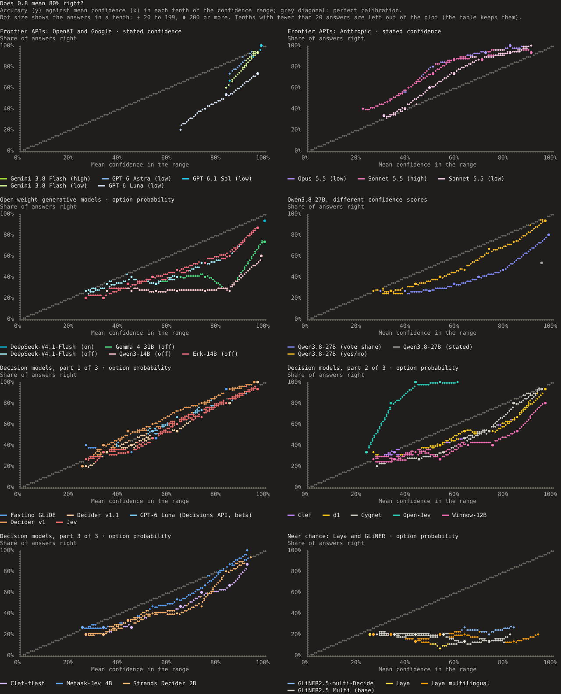
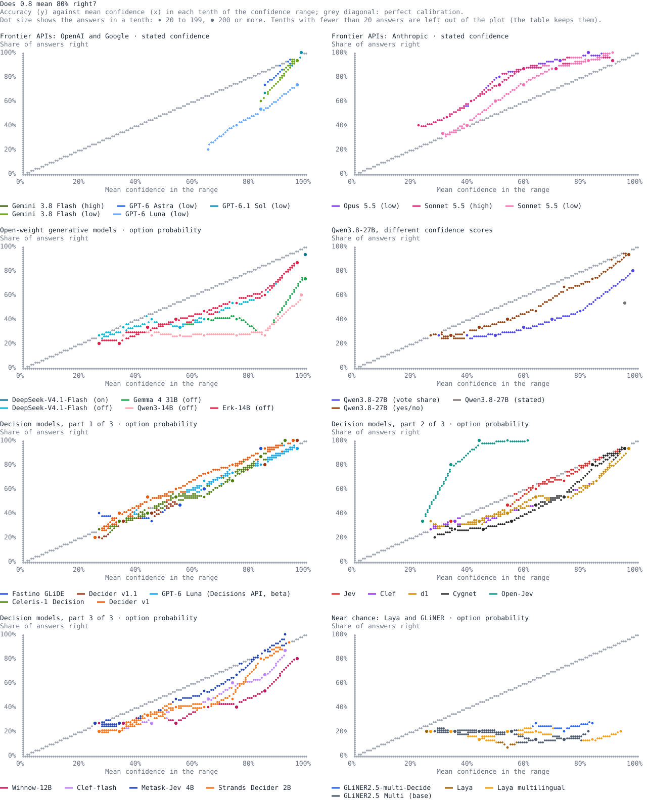
What a confidence of 0.99 actually delivers
What a confidence of 0.99 delivers depends on the scoring method.
Jev answers 311 of 312 questions correctly when its chosen option probability is at least 0.99; d1 answers 273 of 274 correctly. Decider v1 answers all 21 correctly, but that sample is too small to establish 99% accuracy: its 95% Wilson interval runs from 84.5% to 100%. Decider v1.1 answers all 349 correctly (95% interval from 98.9%). GLiDE answers all 121 of its answers at 0.99 or more correctly (95% interval from 96.9%). GPT-6 Luna through OpenAI's Decisions API answers 365 of 368 correctly; with its stated confidence, the same model answers 693 of 830.
Token probabilities behave differently. Gemma answers 1,450 of 1,782 questions correctly at this threshold, about 81%. DeepSeek with reasoning assigns at least 0.99 to every answer letter, including its mistakes, while overall accuracy is about 92%. In this setup, the answer-letter probability after reasoning says almost nothing about correctness.
These figures are after the answer-key audit, which removed some highly confident errors (see Answer key uncertainty affects some conclusions).
Comparing confidence sources on the same answers
Comparisons across configurations can mix two effects: different answers and different confidence scores. To isolate the scoring method, we also apply four confidence sources to the same set of Qwen answers.
On this fixed answer set, Qwen's stated confidence has an AUROC of about 0.51. Its yes/no probabilities and the share of ten samples choosing the answer both reach about 0.78. Open-Jev's probabilities reach about 0.82. Open-Jev is a separately trained model based on Qwen. The answers being scored are fixed, but for this row the model that scores them also changes, so Open-Jev's result does not isolate the confidence method. The three Qwen sources use the same model and do. This matches earlier work: stated confidence tends to cluster at high values12, while large models' answer probabilities on multiple-choice questions can be well calibrated13. Here, access to alternative scoring methods improves the confidence ranking substantially.
Repeated sampling has a different effect on answer accuracy. Choosing the majority answer across ten Qwen samples reaches 54.3%, compared with 54.2% for the stated confidence run. Even when all ten samples agree, the answer is correct only about 85% of the time. Agreement is informative, but repeated agreement can also preserve the same mistake.
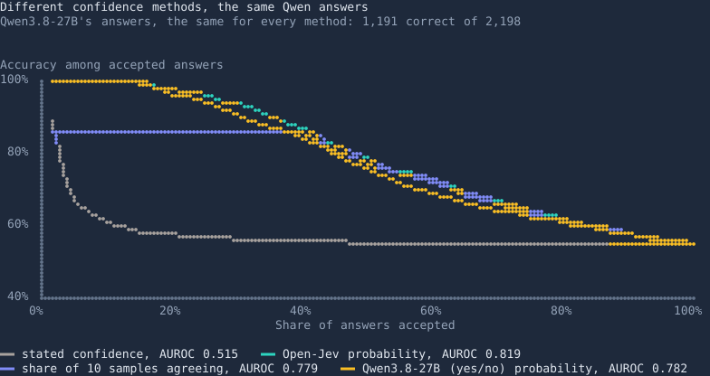
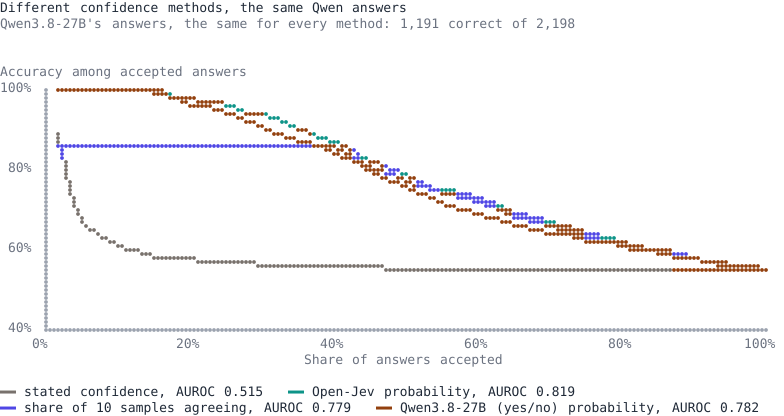
What the results suggest about understanding
The reading and grammar gap shows that strong performance in one part of a language can coexist with difficulty in another. The reasoning comparisons show that performance also depends on how a model is used: Sonnet answers substantially more grammar questions correctly at high effort, and so does DeepSeek with reasoning and sampled decoding, a comparison that does not separate the two. These findings favor describing specific capabilities under specified conditions when discussing understanding, rather than assigning a single judgment to a model.1
The reasoning gains concern the use of capabilities during inference. They do not measure how efficiently a model acquired those capabilities during training. In the terms of Chollet (2019), our scores measure acquired skill under the tested conditions.2 Unknown training exposure also prevents us from attributing the reading and grammar gap to differences in the amount of relevant training.
McCoy, Pavlick and Linzen (2019) show how strong performance on a language inference benchmark can conceal syntactic shortcuts that fail on controlled examples.14 For our benchmark, this motivates a specific follow-up: test matched questions in which a change in grammatical structure should change the answer, alongside changes in wording that should preserve it. The observed reading and grammar gap identifies areas to investigate; it does not establish which strategy a model used.
Recent work also distinguishes the evidence needed for different claims. Beckmann and Queloz (2026) argue that internal computational structures can support specific forms of understanding.15 Our output comparisons do not inspect those structures. Blanck and Noble (2026) distinguish linguistic from inferential generalization.16 Their distinction motivates separating changes in how a question is expressed from changes in the inference needed to answer it. Our current contribution is to map behavioral differences across tasks, confidence methods and inference settings, providing a basis for those more targeted experiments.
Capabilities vary across demands within one language
The reading and grammar contrast is one of the clearest patterns in the benchmark. Many models answer questions about meaning considerably better than questions requiring explicit grammatical analysis. The strongest configurations handle both well, and the gap narrows substantially for Sonnet at high effort and for DeepSeek with reasoning and sampled decoding.
One interpretation is that reading comprehension draws on abilities that transfer across tasks and languages, while school grammar depends more on language-specific knowledge and learned conventions. Task difficulty, training exposure and question format could also produce the gap; the benchmark does not separate these causes.
Confidence becomes less informative on grammar
For many configurations, confidence separates correct and incorrect answers less well on grammar than on reading. Jev's AUROC falls from about 0.89 on reading to 0.72 on grammar; Open-Jev's falls from about 0.89 to 0.75. A confidence that works on one kind of task can work less well on another.
An external Arize evaluation reports higher AUROC for Jev on English tasks with two labels. Language, task and the number of options all differ between the two settings.
Adaptation improves accuracy and confidence ranking
Open-Jev adds a small adapter, a scoring head and a calibration temperature to the Qwen base model. Compared with Qwen's plain yes/no scoring, the released configuration improves accuracy by about 3.8 percentage points. The paired difference remains significant after the Holm correction across the 37 selected comparisons, with p = 0.006. On the same answers, confidence AUROC improves from about 0.78 to 0.82.
Its probability scale nevertheless transfers poorly to these questions. Open-Jev never assigns a chosen option probability of 0.7 or more, despite answering all 144 questions in the 0.5 to 0.6 range correctly. In a separate analysis on version 1 of the bank, refitting the temperature with cross-validation lowers ECE from 0.228 to 0.030. Accuracy is unchanged and AUROC changes only slightly, from 0.8193 to 0.8191. The main results use the released configuration, without this refitting.
Accuracy, confidence ranking and calibration move separately, so each needs its own measurement.
What stronger evidence would require
A next experiment could hold the relevant rule constant while changing wording and vocabulary, then change a grammatical relationship that should alter the answer. A separate experiment could introduce unfamiliar rules through a fixed number of examples and test new combinations. These designs would help distinguish consistent use of a relationship from success tied to familiar question patterns. The present reading and grammar comparison identifies where such tests would be informative.
Answer stability across repeated runs
Repeated runs reveal whether an answer changes when the same question is asked again. We repeated 7 of the 20 configurations that take one question per request five times over the whole bank, and 6 of the 13 that take 16 questions per request five times on a fixed sample of 200 questions, using the same batches.
Across the full bank of 2,198 questions, Open-Jev changes 0 answers, Decider v1 2 and Decider v1.1 0. Jev changes about 14%, d1 about 10%, and Qwen's yes/no scoring about 7%. On the sample of 200 questions, Astra changes one answer, Opus changes 20 and Sonnet at high effort changes 31. The two groups use different question sets.
Stable answers are not necessarily correct. The table also counts mistakes made with the same option in every run: these mistakes persisted across all five runs.
Server state can matter as well. Gemma gives identical answers across five runs within one server session; after a restart, the same requests changed some answers, in a rerun that was not stored. The repeats for Gemma and DeepSeek were recorded before token probabilities were requested, so those repeat runs do not include confidence scores.
Interpreting performance differences
The comparison table uses paired tests because both configurations answer the same questions. The relevant evidence comes from questions on which only one configuration is correct. We report exact McNemar tests17 and apply the Holm correction across the 37 comparisons shown.
Astra's lead over Sol is about 0.9 percentage points. Of the 36 questions on which only one is correct, Astra answers 28 correctly and Sol answers eight. The difference is significant after correction, with p = 0.029. The leaderboard's tied groups use a separate correction across all 528 pairs; under it, the same pair falls short of significance (p = 0.068). A shared group means no difference was detected, not that two models are equal.
Some larger gaps do not reach that threshold. DeepSeek with reasoning leads Opus at low effort by about 1.6 percentage points, but its corrected p value is about 0.47: the test cannot separate the two, which is not the same as showing they are equal. Many comparisons in language processing lack the statistical power to detect differences of this size18.
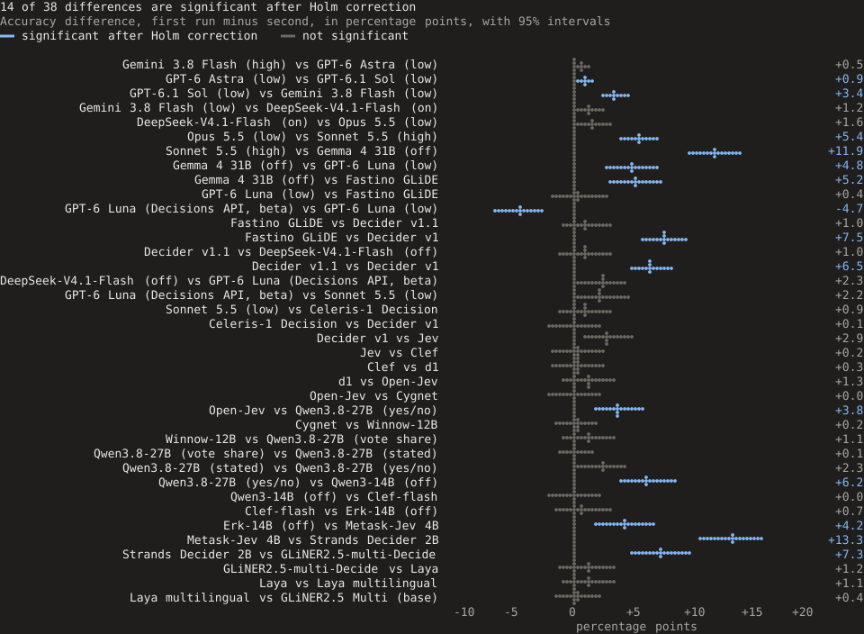
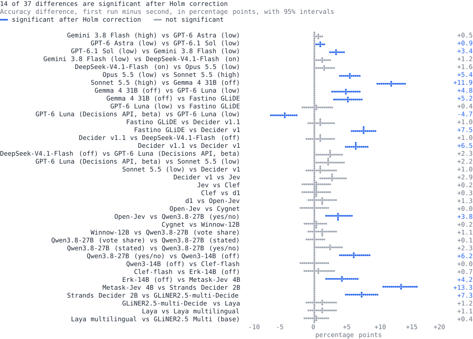
How the benchmark was run
Models and configurations
The benchmark includes hosted decision models, locally served decision models, generative models with released weights, and hosted frontier models. Decision models score supplied options; generative models (the overview calls them general-purpose models) produce an answer and, in some configurations, a stated confidence.
Jev, Perplexity's Decider v1 and v1.1, Liquid AI's d1, Cloudflare's Clef and Clef-flash, Fastino's GLiDE, Amazon's Strands Decider 2B, Cygnet, Winnow-12B, Metask-Jev 4B, Laya and Open-Jev provide different implementations of option scoring, and so does OpenAI's Decisions API (beta), which reads GPT-6 Luna. Both Deciders, Clef and Open-Jev are built on Qwen3.8-27B, Clef-flash on Qwen3.5-9B and Strands Decider 2B on Qwen3.5-2B. Fastino describes GLiDE as reasoning on uncertain decisions before scoring. Cygnet runs Gemma 4 12B IT unchanged, read out by option letter; Winnow-12B is a fine-tune of Gemma 4 12B IT, and Metask-Jev 4B a fine-tune of Qwen3.5-4B. GLiNER2.5 Multi (gliner2.5-multi-v1) is Fastino's base extraction and classification model, and GLiNER2.5-multi-Decide its decision fine-tune of the same 287M model. Both score near chance level (17.5% and 20.2%, with chance at 20% for five options) and provide a smaller baseline. The Qwen comparisons examine stated confidence, yes/no scoring and agreement across ten samples, allowing us to test how confidence is obtained from the same base model.
GPT-6 Astra, GPT-6.1 Sol, GPT-6 Luna, Claude Opus 5.5, Claude Sonnet 5.5 and Gemini 3.8 Flash provide generative comparisons. Sonnet runs at both low and high effort, and Gemini 3.8 Flash at low and high thinking; GPT-6 Luna also runs through the Decisions API. Qwen3-14B, Erk-14B (Qwen3-14B with continued Turkish training), Gemma 4 31B and DeepSeek-V4.1-Flash run locally and expose answer token probabilities. DeepSeek runs with reasoning disabled and enabled. Each row in the setup table records the particular configuration used.
| Runs | Why they are here |
|---|---|
| Jev 1.13.0 | The hosted decision model that inspired Open-Jev, through TypeSafe's API. |
| Perplexity Decider 27B v1 and v1.1, Liquid d1 | More hosted decision models: Perplexity's
pplx-decider-v1-27b and pplx-decider-v1.1-27b through its Decisions API, and
Liquid AI's d1 through its free tier. Perplexity describes v1.1 as v1's Qwen3.8-27B backbone with the causal
mask lifted and more training data. |
| Clef | Cloudflare's open-weight decision model, post-trained from Qwen3.8-27B with a scoring head, self-hosted. It scores every option of the System One request in one forward pass. |
| Clef-flash | Cloudflare's smaller open-weight decision model, post-trained from Qwen3.5-9B with the same scoring head and release code as Clef, self-hosted. |
| Metask-Jev 4B | An open-weight decision model fine-tuned from Qwen3.5-4B, self-hosted. Its training covers 16 languages, Turkish among them, and its model card estimates that it would rank above Jev 1.13.0 on JevBench. |
| Cygnet | blockbrain-ai's recipe: Google's Gemma 4 12B IT, unchanged, reads the probability of each option letter at a single output token, with one calibration temperature (3.4). It runs as its authors serve it, on vLLM, and they report first place on JevBench v1.5.4. |
| Winnow-12B | EldanRing's fine-tune of Gemma 4 12B IT for typed decisions, published only as GGUF files: its recommended 8-bit (Q8_0) file on its own llama.cpp-based server, with the settings its author measured. Its author reports matching Jev on JevBench's public items. |
| Fastino GLiDE | A hosted decision model, through Fastino's System One API. Fastino describes it as making a fast assessment, then reasoning further on uncertain decisions before it returns the probabilities. |
| Strands Decider 2B | Amazon's open-weight decision model: a LoRA adapter and a decision head on Qwen3.5-2B-Base, self-hosted with the package's own server, readout and fitted temperatures. |
| Laya, Laya multilingual | Open-weight decision models, self-hosted: an encoder with a decision head that scores every option in one pass. |
| GLiNER2.5 Multi (base) | Fastino's small open-weight model for extraction and classification (287 million weights), self-hosted. It gets the decision models' request and scores the options as labels, which shows how far a small multilingual classifier gets. |
| GLiNER2.5-multi-Decide | Fastino's decision fine-tune of the same 287M model, self-hosted with the same server and request as the base model. |
| Open-Jev 27B v1.1 | The open decision model as released, self-hosted. |
| Qwen3.8-27B, yes/no scoring | Open-Jev without its trained parts: the same base model and prompts, scored by the Yes-minus-No logit at temperature 1, with the same probability formula. The gap to Open-Jev is what the adapter, head and temperature add. Temperature never changes which option wins, so the accuracy comparison is exact. |
| Qwen3.8-27B, stated confidence | The same base model used the ordinary way: it picks an option and states a 0–1 confidence. This shows whether the model's own words give a confidence as useful as its token probabilities. |
| Qwen3.8-27B, vote share | The same request as the stated-confidence run, sampled 10 times; the answer is the most frequent letter and the confidence the share of samples that chose it. This shows whether sampling a model repeatedly, without reading its probabilities, flags mistakes as well. |
| GPT-6 Astra, GPT-6.1 Sol, GPT-6 Luna, Claude Opus 5.5, Claude Sonnet 5.5, Gemini 3.8 Flash | Frontier models that also state a confidence: an upper reference for accuracy, and a test of how well a strong model's stated confidence tracks its accuracy. Sonnet ran at low and at high effort, and Gemini 3.8 Flash at low and at high thinking. GPT-6.1 Sol is OpenAI's lower-cost model near Astra and GPT-6 Luna its cheapest GPT-6 tier; Gemini 3.8 Flash is Google's most capable Flash model. |
| GPT-6 Luna, Decisions API (beta) | OpenAI's Decisions API, in public beta, which returns a probability for every option and serves only GPT-6 Luna. Set against the GPT-6 Luna run above, it compares two setups of one model: option probabilities through the Decisions API, one question per request, and a stated confidence through Codex CLI, 16 per request. The comparison does not isolate the confidence method. |
| Gemma 4 31B, DeepSeek-V4.1-Flash | Self-hosted open-weight models that write their answers; their confidence is the probability of the letter they write. DeepSeek ran with reasoning off and on; its reasoning run also samples instead of decoding greedily, so the pair does not separate the two. |
| Qwen3-14B, Erk-14B | A comparison of Turkish training: Erk-14B is Qwen3-14B with continued training on Turkish text, by eCloud. Both run self-hosted with the same request and settings. Continued training by a third party may change more than the language. |
How Open-Jev produces probabilities
Open-Jev 27B v1.1 uses the Qwen base model with a LoRA adapter containing 15.5 million parameters, about 0.06% of the base model's size, plus a scoring head and a calibration temperature. It scores candidate answers without generating a written response.
For each option, it constructs a prompt containing the question context and that option as the proposed answer. The candidate prompts are evaluated separately, although the question context includes all the answer options. The scoring head produces one score per candidate. Dividing these scores by a temperature of 2.53 and applying softmax produces probabilities across the options.
The scoring head starts from Qwen's preference for Yes over No. Training updates the adapter and head from that starting point. The model card describes the training stages and the data used to fit the released temperature.
Jev and Open-Jev also return a rescaled confidence that maps an equal probability over all options to zero and complete concentration on one option to one. This benchmark uses the chosen option probability for calibration. Changing a positive temperature preserves the winning option within a question, but can change the confidence ordering across different questions. The near constant AUROC in the version 1 refitting experiment is an observed result, not a general guarantee.
Question extraction and verification
The current bank is version 2. Initial extraction lost formatting that some grammar questions required: 196 of 229 questions referring to underlined words had no underline, and 186 questions referring to numbered words had lost the numbers. Flagged questions were transcribed again and checked against the page images.
Version 2 changes the text or answer key of 375 questions and makes 12 additional questions scoreable. A subsequent audit excludes 12 questions whose keys could not be confirmed. The scored set contains 2,198 questions, including 12 still marked suspect. Excluded questions are omitted from accuracy and confidence metrics; resources already spent answering them remain included in time, token and cost totals. In all, 493 questions are marked verified.
The repair table compares configurations run on both versions. It separates repaired questions from unchanged questions so that improvements following transcription fixes can be distinguished from variation between runs. On repaired questions, accuracy rises by 11 to 30 percentage points for the configurations tested on both versions, except the Laya models. Configurations using batches of 16 also encounter different neighboring questions between versions.
The source book is TYT IQ Türkçe Soru Kütüphanesi (TYT IQ Turkish Question Library), published by Paraf Yayınları (ISBN 978-625-7423-18-2; the imprint gives © 2022 and no edition number). The question texts are copyrighted and cannot be shared. Someone who owns the book can rebuild the bank in the same format with the extraction and repair scripts in the repository's runner folder: they read the book's pages into the SQLite schema the runner uses, with questions, options, passages and keys, and record each repair. The answer export lists every question's ID, unit, page and printed number, so a rebuilt bank can be matched to ours question by question; the results file gives each unit's printed Turkish title next to the English name this page uses.
Prompts and batching
Questions are supplied with their lettered options. Generative models receive a Turkish instruction to answer without explanation and return structured JSON containing an allowed letter, plus confidence where requested. GPT, Claude, Gemini, Gemma, DeepSeek, Qwen3-14B and Erk-14B receive 16 questions per request; two extra runs of GPT-6 Astra and Gemma 4 31B on 200 questions receive one, to measure the effect (see Limits of the evidence). Decision models, the Decisions API run, GLiNER and the Qwen3.8-27B configurations receive one.
The decision request contains the complete question and options as context, an instruction to identify the correct answer, and each option as a typed choice. Local adapters translate that request into the input expected by the particular model; OpenAI's Decisions API takes it under its own field names. Missing answers, refusals or letters outside the allowed options count as incorrect; the only ones in the reported runs are four questions the Decisions API refused without giving a reason.
Inference settings
Local generative runs without reasoning use greedy decoding. DeepSeek's reasoning run uses sampling at temperature 1.0 and top-p 1.0 because greedy decoding caused reasoning loops. Qwen's ten sample comparison uses temperature 0.7, top-p 0.8, top-k 20 and a presence penalty of 1.5.
The hosted GPT, Claude and Gemini comparisons use the lowest reasoning setting tested here, apart from the additional high-effort run of Sonnet and high-thinking run of Gemini 3.8 Flash. Temperature is not exposed by every access method. Gemini reports no thinking tokens for its recorded low setting.
Agent instructions are replaced with a short benchmark instruction where applicable, local configuration is ignored, and available tools are disabled. The reported benchmark runs do not search the web or execute commands. Earlier exploratory runs revealed that web access could retrieve the source book, which made disabling it necessary.
Sources of confidence
For decision models, the Decisions API run, GLiNER and Qwen's yes/no scoring, confidence is the probability assigned to the selected option. The Decisions API rounds its probabilities to two decimals, so its 2,194 scores take only 80 distinct values and tie often. GPT, Claude, Gemini and Qwen's stated confidence configuration return a number between zero and one. For the sampling comparison, confidence is the fraction of ten samples choosing the selected answer.
For Gemma, DeepSeek, Qwen3-14B and Erk-14B, confidence comes from the probability of the generated answer letter, renormalized over the available option letters recovered from the token alternatives. With reasoning enabled, this letter is produced after the reasoning. These scores come from different mechanisms, so each is tested on its own results rather than assumed comparable.
Statistical methods
Confidence AUROC and selective accuracy estimates use 95% bootstrap intervals from 1,000 resamples. The 14 questions sharing seven passages are resampled together. Routing splits also keep each shared passage in one half. Small subsets, including answers above a confidence threshold, use Wilson intervals for accuracy.
Paired model comparisons use exact McNemar tests, with Holm correction across the 37 reported comparisons. Routing simulations use 300 random splits.
Time and token accounting
Throughput divides the number of answered questions by the time spent in requests. For runs with several requests in flight (DeepSeek with reasoning, eight; GLiDE, Gemini 3.8 Flash at high thinking and the Decisions API run, four each), time is measured while any request is active. Hardware, concurrency, network behavior, batching and service limits all affect this result, so it describes the tested setup.
Twelve runs do not record each request's time: Jev, Perplexity's Decider v1, d1, Open-Jev, both Laya models, Qwen3.8-27B's yes/no scoring and stated confidence, GPT-6 Astra, Claude Opus 5.5 and both Claude Sonnet 5.5 runs. In runs with 16 questions per request, each question carries the time of its whole request. The benchmark therefore reports throughput for every run, and the time per request only for the runs that sent one question per request and recorded it (see Accuracy, cost and latency). Output tokens use the counts reported by each API or server. Some decision services report fixed output token charges despite generating no text, so these counts should be read as usage or billing conventions rather than equivalent amounts of generated reasoning.
Limits of the evidence
Training exposure and memorization remain unresolved
The source book is available online. Some models may have encountered its questions, explanations or answer keys during training, a form of benchmark contamination that is rarely measured19. Disabling retrieval during evaluation prevents live access to those materials; it cannot remove prior exposure.
We use two supplementary checks. Nine models answer the 40 Turkish questions from the June 2026 TYT examination, with scores ranging from 24 to 40 correct. The models are tested in October, after the examination became public, so this set cannot be assumed to be unseen. Its small size also limits comparisons with the much larger question bank.
A separate modification replaces the correct option's text with a copy of an incorrect option. On questions with text options, Astra selects the original answer letter 31.0% of the time and the copied option 28.4%, with p = 0.19. This check finds no clear preference for the original letter, but addresses only that particular form of answer recall. It cannot rule out familiarity with the question or its content.
Answer key uncertainty affects some conclusions
Label errors are common in benchmark test sets and can change model rankings20. The targeted key audit examines 25 cases, including highly confident errors and questions on which several strong models disagree with the printed key. It confirms 13 keys and excludes 12 questions. Six exclusions arise because the page image does not settle the key; in the other six, the reviewer cannot establish the printed answer against the models' interpretation.
Most models answer the excluded questions incorrectly under the printed key, so removing them raises reported accuracy. The effect is no more than about 0.5 percentage points, but it is more substantial within the small subset of highly confident errors. For Qwen's yes/no scoring, six of its eight errors at a confidence of 0.99 or more are removed; for Astra, three of eight; for Jev and d1, two of three. Later runs do not receive the same audit. The confidence threshold results should be read with this asymmetry in mind.
The results depend on the tested configurations
One configuration does not represent every way a model can be used. Reasoning effort, batching, sampling, precision, serving software and server state can all affect answers. Repeated runs and the three reasoning comparisons show some of this sensitivity, but do not exhaust it. Asked one question per request instead of 16, on the 200 questions of the repeats, GPT-6 Astra answered 197 correctly, against 195 or 196 in its five runs with 16, and Gemma 4 31B 137, against 141 in its five runs, which came from an earlier server session; neither difference is significant (p ≥ 0.5).
The benchmark also covers one language, one source book and a particular mixture of reading and grammar tasks. It provides evidence about these conditions and motivates tests in others. Establishing broader generalization would require additional datasets and better control over prior exposure.
Data and code
Results version ebf699eb · Data questions-v2.sqlite (797ad6c8). The results version identifies this snapshot of the results file, and the data version the question bank it was computed from; the sharing images carry both.
The published results file contains the summary metrics. The answer export contains the answers of the 33 main configurations, the 58 repeat runs, the four runs of the two routing tests with new frontier calls, the two cheaper models run alone on the same held-out questions, and the two runs with one question per request: question identifiers and metadata, recorded scores and option probabilities at full precision, settings and prompt templates. It does not include the question texts. The metric code shows how the reported statistics are calculated.
From a copy of the repository, reproduce.py recomputes from the answer export each main configuration's accuracy, AUROC, ECE and answers at 0.99 or more, before and after the key audit, together with the 37 paired comparisons and the tied groups, including that two configurations share a letter exactly when the test does not tell them apart. It also recomputes each repeated configuration's answer stability statistics from its runs, every published cost from the token counts at the listed prices, and the routing costs from their parts. It checks all of these against the results file: all 1,093 checks match. The runner folder holds the benchmark code, the run scripts and the server wrappers used for the self-hosted models, with setup instructions.
Some things remain unavailable. The question texts and the book's pages are copyrighted, so running the benchmark again needs a rebuilt bank (see Question extraction and verification). The 40 questions of the 2026 examination stay private, and only aggregate scores are published. The raw model responses behind the token counts are not exported. The bootstrap intervals and the routing simulations' accuracy use the same metric code and exported answers, but reproduce.py does not yet check them.
References
- Mitchell, M., & Krakauer, D. C. (2023). The debate over understanding in AI's large language models. Proceedings of the National Academy of Sciences, 120(13), e2215907120. https://doi.org/10.1073/pnas.2215907120 ↩ ↩
- Chollet, F. (2019). On the Measure of Intelligence. arXiv:1911.01547. https://arxiv.org/abs/1911.01547 ↩ ↩
- Yüksel, A., Köksal, A., Şenel, L. K., Korhonen, A., & Schütze, H. (2024). TurkishMMLU: Measuring Massive Multitask Language Understanding in Turkish. Findings of EMNLP 2024. https://aclanthology.org/2024.findings-emnlp.413/ ↩
- Liang, P., et al. (2023). Holistic Evaluation of Language Models. Transactions on Machine Learning Research. https://arxiv.org/abs/2211.09110 ↩
- Chen, L., Zaharia, M., & Zou, J. (2023). FrugalGPT: How to Use Large Language Models While Reducing Cost and Improving Performance. arXiv:2305.05176. https://arxiv.org/abs/2305.05176 ↩
- Ong, I., et al. (2024). RouteLLM: Learning to Route LLMs with Preference Data. arXiv:2406.18665. https://arxiv.org/abs/2406.18665 ↩
- Snell, C., Lee, J., Xu, K., & Kumar, A. (2024). Scaling LLM Test-Time Compute Optimally can be More Effective than Scaling Model Parameters. arXiv:2408.03314. https://arxiv.org/abs/2408.03314 ↩
- Zheng, C., Zhou, H., Meng, F., Zhou, J., & Huang, M. (2024). Large Language Models Are Not Robust Multiple Choice Selectors. ICLR 2024. https://arxiv.org/abs/2309.03882 ↩
- Ribeiro, M. T., Wu, T., Guestrin, C., & Singh, S. (2020). Beyond Accuracy: Behavioral Testing of NLP Models with CheckList. Proceedings of ACL, pp. 4902–4912. https://aclanthology.org/2020.acl-main.442/ ↩
- Geifman, Y., & El-Yaniv, R. (2017). Selective Classification for Deep Neural Networks. Advances in Neural Information Processing Systems 30. https://arxiv.org/abs/1705.08500 ↩
- Guo, C., Pleiss, G., Sun, Y., & Weinberger, K. Q. (2017). On Calibration of Modern Neural Networks. Proceedings of ICML, PMLR 70, 1321–1330. https://arxiv.org/abs/1706.04599 ↩
- Xiong, M., et al. (2024). Can LLMs Express Their Uncertainty? An Empirical Evaluation of Confidence Elicitation in LLMs. ICLR 2024. https://arxiv.org/abs/2306.13063 ↩
- Kadavath, S., et al. (2022). Language Models (Mostly) Know What They Know. arXiv:2207.05221. https://arxiv.org/abs/2207.05221 ↩
- McCoy, R. T., Pavlick, E., & Linzen, T. (2019). Right for the Wrong Reasons: Diagnosing Syntactic Heuristics in Natural Language Inference. Proceedings of ACL, pp. 3428–3448. https://aclanthology.org/P19-1334/ ↩
- Beckmann, P., & Queloz, M. (2026). Mechanistic indicators of understanding in large language models. Philosophical Studies, 183, 1747–1792. https://doi.org/10.1007/s11098-026-02513-1 ↩
- Blanck, R., & Noble, B. (2026). Logic, inference, understanding: cross-domain generalization for generative language models. Frontiers in Artificial Intelligence, 9, 1800372. https://doi.org/10.3389/frai.2026.1800372 ↩
- Dietterich, T. G. (1998). Approximate Statistical Tests for Comparing Supervised Classification Learning Algorithms. Neural Computation, 10(7), 1895–1923. https://doi.org/10.1162/089976698300017197 ↩
- Card, D., Henderson, P., Khandelwal, U., Jia, R., Mahowald, K., & Jurafsky, D. (2020). With Little Power Comes Great Responsibility. Proceedings of EMNLP 2020, pp. 9263–9274. https://aclanthology.org/2020.emnlp-main.745/ ↩
- Sainz, O., et al. (2023). NLP Evaluation in trouble: On the Need to Measure LLM Data Contamination for each Benchmark. Findings of EMNLP 2023. https://arxiv.org/abs/2310.18018 ↩
- Northcutt, C. G., Athalye, A., & Mueller, J. (2021). Pervasive Label Errors in Test Sets Destabilize Machine Learning Benchmarks. NeurIPS 2021 Datasets and Benchmarks Track. https://arxiv.org/abs/2103.14749 ↩